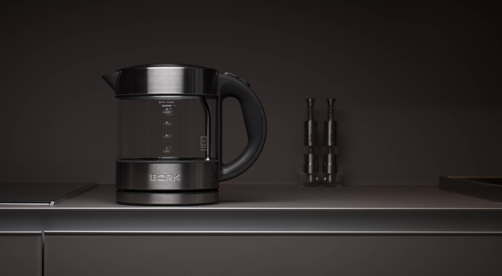
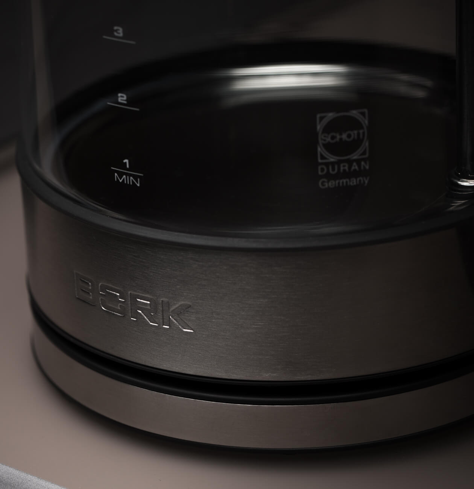
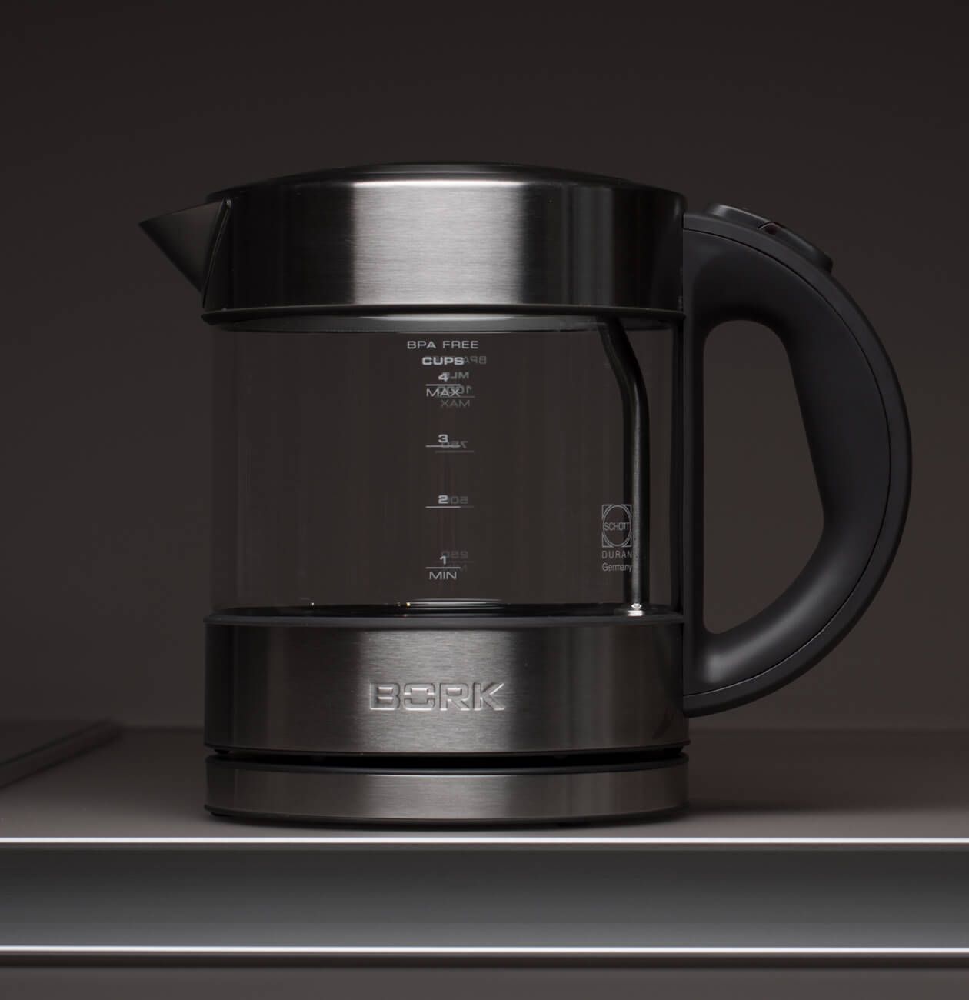
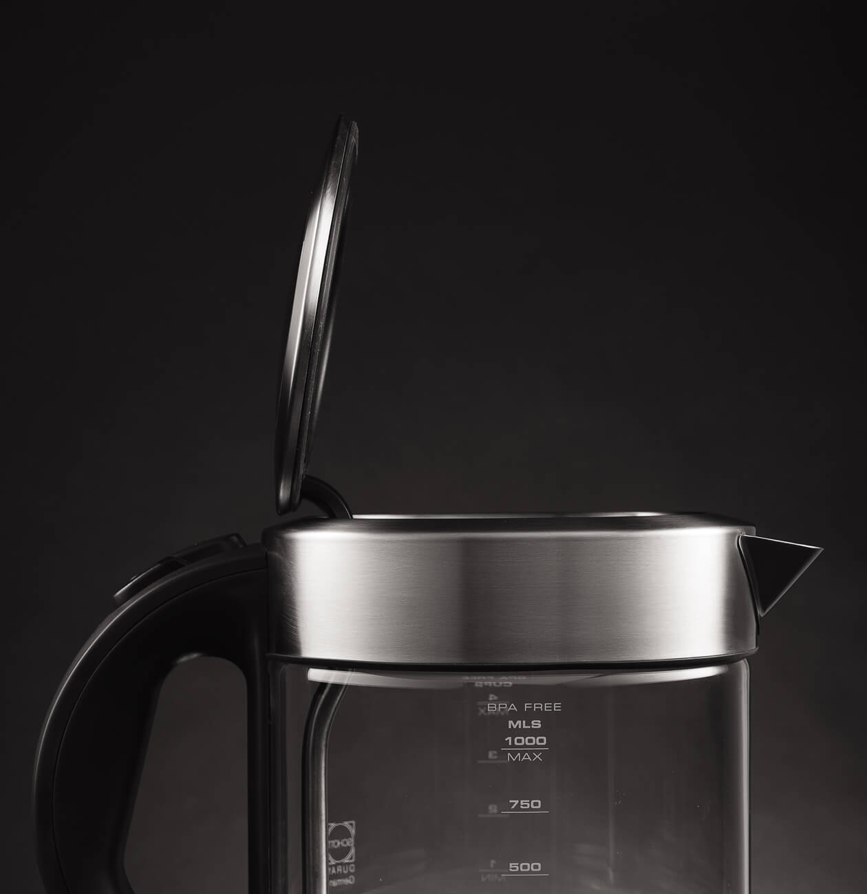
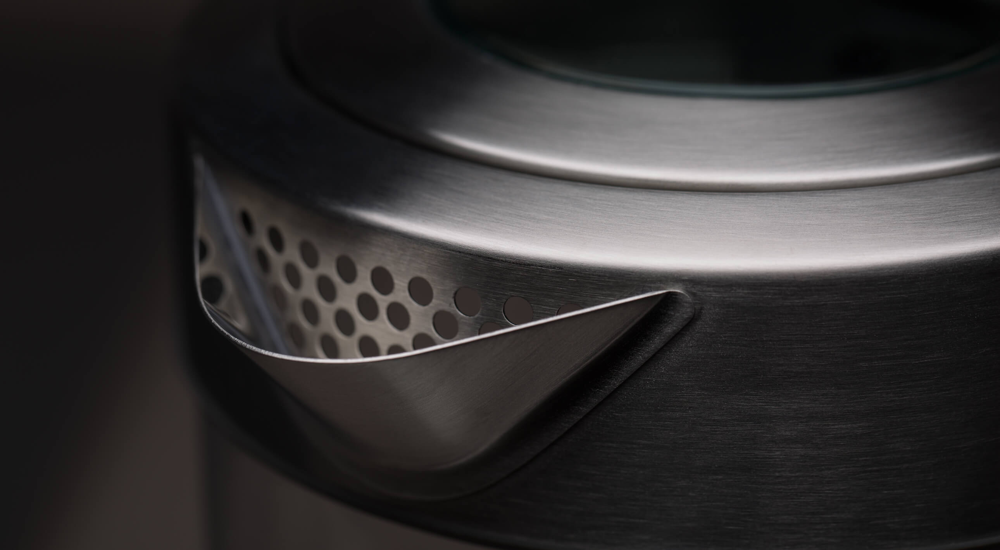
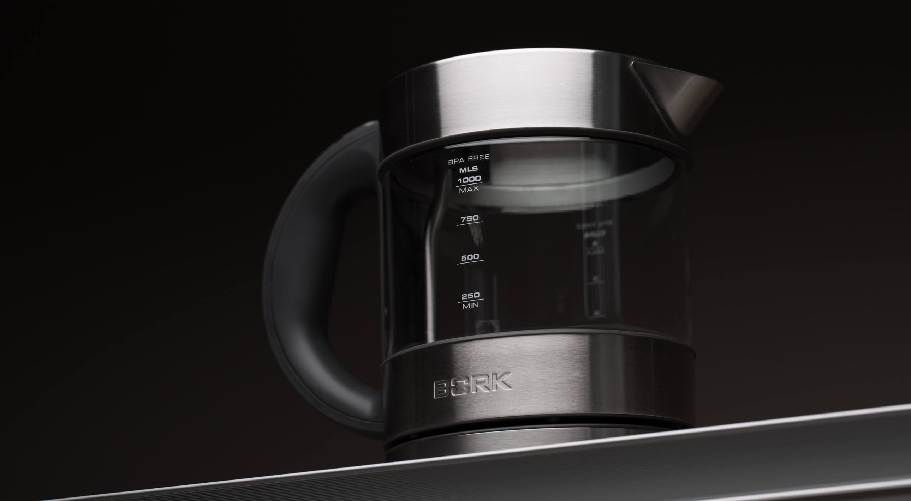

Чайник К702
Изящная и компактная модель из термостойкого стекла.
Стиль и качество
Колба чайника изготовлена из немецкого термостойкого стекла Schott Duran, не содержащего примеси и посторонние компоненты, что положительно сказывается на вкусе воды.
Легкость и компактность
Изящный чайник K702 отличается компактным размером, благодаря чему он идеально впишется в любой интерьер. Малый вес чайника, делает его невероятно удобным для использования.
Продуманная конструкция
Плавное открывание крышки гарантируют безопасность и удобство использования. Эта технология исключает разбрызгивание горячей воды при открывании чайника. В сочетании со звуковой индикацией и подсветкой шкалы для воды, этот элемент продуманной конструкции делает использование чайника максимально комфортным. Большой диаметр крышки позволяет удобно заливать воду и при желании промыть чайник.
Лёгкое и безопасное наливание
Идеальный угол наклона носика обеспечивает равномерную подачу воды, не образуя подтёков по корпусу и избегая пролива мимо чашки.
Контактная группа Strix

Strix уже давно зарекомендовал себя на рынке - основные преимущества заключаются в следующем:
- Полный набор защитных механизмов, которые обеспечивают максимальную безопасность при использовании чайников. Есть и отключение при перегреве нагревательного элемента, и защита скачков напряжения, а также - отключение, если чайник снимается до закипания.
- Конструкция контактных групп позволяет реализовать вращение чайника на подставке на 360 градусов, чтобы и правша, и левша мог использовать чайник с одинаковым удобством.
- Контактная группа Strix, рассчитана на 3 000 000 закипаний воды в чайнике
- Максимальная погрешность температур ± 3 ˚ С, такая точность, позволяет полностью раскрыть аромат и вкус, каждого из завариваемого чая.
Технические характеристики

Мощность 2000-2400 Вт
Объем 250 мл - 1 л
Материал корпуса Сталь, стекло
Срок гарантии 1 год
Фильтр от накипи Металлический
Автоотключение Есть
Отключение без воды Есть
Плавное открывание крышки Есть
Нагревательный элемент Скрытый
Контакт с базой 360˚
Длина кабеля 1,05 м
Вес 1,2 кг
Тип управления Механическое
Страна производства Китай